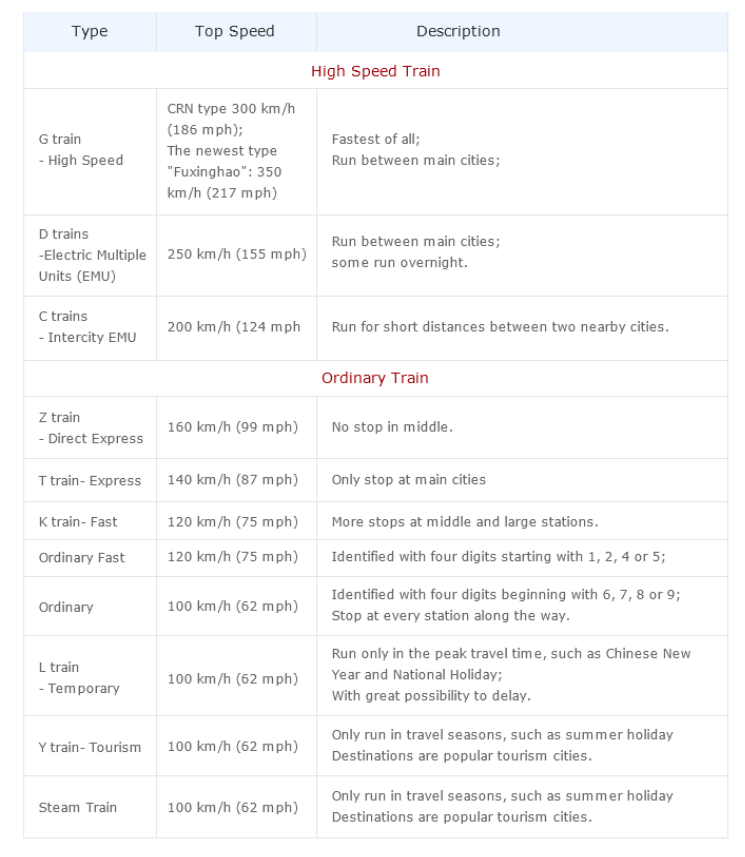

<!DOCTYPE html>
<html lang="en" dir="ltr">
  <head>
    <meta charset="utf-8" http-equiv="Content-Type" />
    <meta http-equiv="X-UA-Compatible" content="IE=edge,Chrome=1" />
    <title>Book China Train Tickets, Search China Train Price, schedule, Timetable, Help travellers take train travel in China</title>
    <meta name="viewport" content="width=device-width,initial-scale=1,minimum-scale=1,maximum-scale=1,user-scalable=no" />
    <link rel="stylesheet" href="../static/css/reset.css">
    <link rel="stylesheet" href="../static/css/common.css">
    <link rel="stylesheet" href="../static/css/train-know.css">
    <link rel="stylesheet" href="//apps.bdimg.com/libs/jqueryui/1.10.4/css/jquery-ui.min.css">
  </head>
  <body>
    <!-- 公共头部 -->
    <div class="header_">
      <div class="top-wra">
        <div class="top">
          <h1 class="title">China Train, China Train Tickets, China Train Tours!</h1>
          <div class="contact">
            <i class="contact-icon"></i>
            <a class="text">Contact Us</a>
            <span class="line">|</span>
            <i class="icon-back"></i>
          </div>
        </div>
      </div>
      <div class="nav-wra">
        <div class="nav">
          <i class="nav-icon"></i>
          <div class="list">
            <i class="home-icon"></i>
            <ul class="items">
              <li class="item active">
                <a class="link" href="../china-trains/train-search.html">China Trains</a>
              </li>
              <li class="item">
                <a class="link" href="../china-flights/">China Flights</a>
              </li>
              <li class="item">
                <a class="link" href="https://www.mychinataxi.com">China Car</a>
              </li>
              <li class="item">
                <a class="link" href="../china-train-tour/">China Tours</a>
              </li>
              <li class="item">
                <a class="link" href="diytrip/index.html">Customize China Tours</a>
              </li>
              <li class="item">
                <a class="link" href="../tibet-travel/">Tibet Train Tours</a>
              </li>
            </ul>
          </div>
        </div>
      </div>
    </div>
    <div class="header_seize_"></div>
    <!-- list -->
    <div class="howto">
        <div class="wrapper">
            <h3 class="title">About book China Train Tickets with CTT</h3>
            <div class="left">
                <div class="left-content">
                    <a href="train-know.html">How to Book Tickets</a>
                    <a class="" href="train-qu-state.html">How to know my Booking Status</a>
                    <a class=""href="train-qu-collect.html">How to Collect Tickets</a>
                    <a class="spe active" href="train-qu-choose.html">How to Choose Train Types & Seat Classes</a>
                    <a class="" href="train-qu-read.html">How to Read the Tickets</a>
                    <a href="train-qu-take.html">How to Take Train in China</a>
                    <a href="train-qu-cancellation.html">How to Change Tickets</a>
                    <a href="train-qu-q_a.html">Booking Q&A</a>
                </div>
            </div>
            <div class="right">
                <h4 class="right-tit">How to Choose Train Types & Seat Classes?</h4>
                <div class="right-dt">
                    <div class="choose-h">
                        <h4>China train ticket types can be classified into:</h4>
                        On high-speed trains (C, D, G trains): second class seat, first class seat, VIP seat, business class seat, soft sleeper;
                        <i></i>
                        On ordinary trains (Z, T, K, Y, L trains): hard sleeper, soft sleeper, deluxe soft sleeper, hard seat, soft seat
                        <i></i>
                        High-speed trains are the first choice for some trip less than 5 hours, Sleeper berths are highly recommended for an overnight journey.
                    </div>
                    <div class="choose-list">
                        <div class="item">
                            <h3 class="item-tit">High-Speed Trains</h3>
                            <p class="msg">
                                High-speed trains are Identified by the letters G/D/C and following several digits. They are usually in white or grey with bullet-like shape. The high-speed trains are fast, clean, well-equipped like an airplane and run more smoothly. It’s a good choice for short-distance travel on daytime.
                            </p>
                            <p class="msg">
                                The seat types on High-Speed Trains are usually divided into Second class, First class , VIP class and Business class. There are soft sleeper berths available on a few overnight D trains. One compartment has 4 bunks in soft sleeper carriages, while deluxe soft sleeper has two bunks in a compartment.
                            </p>
                            <dl class="item-dl">
                                <dt>1 Second Class Seat</dt>
                                <dd>
                                    Seats are five seats in a row, three on one side of the aisle and two on the other side. The seat backrest can be adjusted to a comfortable angle and has a small, foldable table attached. The seats in other classes also have this feature. The price of Second Class seat is the lowest on high-speed trains.
                                </dd>
                                <dt> 2 First Class Seat</dt>
                                <dd>
                                    First Class Seats are four seats in a row, two on each side of the aisle. The seats are wider and softer than second class seats. With a small pillow and a foldable footrest, they offer a more comfortable experience. The ticket fare is about 1.5 times higher than second class. The first class carriages offer a bottle of drink and a little box of snack for free.
                                </dd>
                                <dt> 3 Business Class Seat</dt>
                                <dd>
                                    Business Class Seats are the equivalent of first class on airplane and are only available on some high-speed trains. There are two sofa-like seats on each side. The seats can be adjusted flat to lie down. The fare is the highest- about twice of first class.
                                </dd>
                                <dt> 4 VIP Seat</dt>
                                <dd> 
                                    VIP Seats are available on some G and D trains. They are as comfortable as the first class seats, which are with two on one side and one on the other. The fare is higher than the first class and about twice of the second class. 
                                </dd>
                                <dt>  5 High-Speed Sleepers</dt>
                                <dd> 
                                    High-Speed Sleepers only available on overnight D trains, such as D308 between Xian and Shanghai and D321/D311/D313 between Beijing and Shanghai. The sleeper berths are on each side of the carriage with the moving forward direction to provide comfortable feeling to the travelers. Every berth has a socket, a headlamp, a reading lamp, an independent desk, and a coat rack. A curtain or quilt is provided. The height between the upper berth and the roof is tall enough for sitting straightly. The luggage can be placed under the lower berth.
                                </dd>
                            </dl>
                        </div>
                        <div  class="item">
                            <h3 class="item-tit">Ordinary Trains</h3>
                            <p >
                                Ordinary trains are identified by Z/T/K/L/Y/S plus digits or just several digits without letters. 
                            </p>
                            <P class="msg">
                                They are colored in blue, orange, red or green and with low speed. The facilities are in lower standard and the price is cheap. They are often for budget travelers.The hard or soft sleepers are good choice for overnight trip. The hard or soft seats are only for a short trip.
                            </P>
                            <p class="msg">
                                Standing Tickets in hard seat carriages are sold on ordinary trains. There are many people standing for the whole trip. In peak seasons, such as Chinese New Year and the National Holiday, the seat carriages are always crowded. 
                            </p>
                            <dl class="item-dl">
                                <dt>1 Hard Sleeper</dt>
                                <dd>  
                                    There are 6 hard sleeper berths in one compartment which is in three levels on each side. Lower berth, middle berth and upper berth. There is no door for hard sleeper compartments. The sleeping environment is not well. The ticket price is about 2-3 times than a hard seat.
                                </dd>
                                <dt>2 Soft Sleeper</dt>
                                <dd>
                                    There are 4 soft sleeper berths in one compartment, 2 upper berths and 2 lower berths. The berths are wider than hard sleepers. Each compartment has a door which can be locked. The fare is about 1.5 times than the hard sleeper.
                                </dd>
                                <dt>3 Deluxe Soft Sleeper</dt>
                                <dd>
                                    There are 2 sleeper berths in one compartment, and with a sofa, a table, a closet and an independent toilet. The fare is about twice that of a soft sleeper. They are only available on some long-distance trips between major cities, such as Beijing to Shanghai, Beijing to Xian and Xian to Shanghai. 
                                </dd>
                                <dt>4 Hard Seat</dt>
                                <dd>
                                    Hard Seat is the cheapest for train travel. There are five seats in a row, three on one side and two on the other. The backrest of the seat can’t be adjusted. Every two facing benches share one small table. The carriages are always noisy, smelly, and crowded with non-seat passengers. During peak seasons, there is no more space for people to turn around. Hard seat is really hard for a long journey.
                                </dd>
                                <dt>5 Soft Seat</dt>
                                <dd>
                                    Soft seats are only available on a few trains. There are four seats in a row with two on each side. The seats are cushioned and softer. The fare is about 1.5 times of a hard seat.
                                </dd>
                            </dl>
                        </div>
                        <div  class="item">
                            <h3 class="item-tit">Other Ticket Types</h3>
                            <dl class="item-dl">
                                <dt>Standing Tickets</dt>
                                <dd>
                                    Standing Tickets are sold after all hard seat tickets are sold out. The passengers with standing tickets are only allowed to board on hard seat carriages and stand at aisle and connection of carriages. The fare is the same as that of a hard seat.
                                </dd>
                                <dt>Student Tickets</dt>
                                <dd> 
                                    These are only for Chinese students. Foreign students cannot buy them.
                                </dd>
                                <dt>Platform Tickets</dt>
                                <dd>
                                    Platform tickets are for the people who see off or pick up and the fare is CNY 1 – 2 or for free. But many stations have stopped offering platform tickets. 
                                </dd>
                            </dl>
                            <div class="note">Note: The above introductions do not apply to international trains from/ to China.</div>
                            
                        </div>
                    </div>
                </div>
            </div>
        </div>
    </div>
    <!-- 公共底部 -->
    <div class="footer_">
      <div class="foot-content">
        <ul class="info">
          <li class="item online">
            <h3 class="title">Book China Train Tickets Online</h3>
            <div class="wra">
              <i class="safe-icon"></i>
              <div class="online-desc">
                <a class="online-link" href="http://www.chinatraintickets.net/china-train-travel/train-accident-insurance.html">BEST PRICE</a>
    						<a class="online-link" href="http://www.chinatraintickets.net/china-train-travel/train-accident-insurance.html">TRAVEL SAFE</a>
    						<a class="online-link" href="http://www.chinatraintickets.net/china-train-travel/train-accident-insurance.html">MONEY BACK</a>
    						<a class="online-link" href="http://www.chinatraintickets.net/china-train-travel/train-accident-insurance.html">TRAIN MAP TIMETABLE</a>
              </div>
            </div>
          </li>
          <li class="item related">
            <h3 class="title">Related Links</h3>
            <a class="related-link" href="http://www.china-flights.cn" target="_blank">http://www.china-flights.cn</a>
						<a class="related-link" href="http://www.chinapleasuretour.com" target="_blank">http://www.chinapleasuretour.com</a>
						<a class="related-link" href="http://www.cina-viaggio.com" target="_blank">http://www.cina-viaggio.com</a>
						<a class="related-link" href="http://www.chinatraintickets.net/shangri-la-oriental-express/">Shangri-La Express</a>
            <a class="related-link" href="http://www.chinatraintickets.net/international-train/">International Train</a>
          </li>
          <li class="item trip">
            <i class="trip-icon"></i>
            <a class="trip-link" target="_blank" href="https://www.tripadvisor.com/Travel-g294211-c148494/China:How.To.Travel.By.Train.In.China.html">How train travel works in China </a>
            <h4 class="trip-title">Trains - Siberian Train Tickets</h4>
            <a class="trip-link2" href="http://www.chinatraintickets.net/trans-siberian-train/beijing-moscow.html">Beijing to Moscow;</a>
						<a class="trip-link2" href="http://www.chinatraintickets.net/trans-siberian-train/beijing-ulan-bator-K23.html">Beijing to Ulaanbaatar;</a>
            <h4 class="trip-title">Luggage Service</h4>
            <a class="trip-link2" href="http://www.chinatraintickets.net/Luggage/index.html">China Train Station Luggage Services </a>
						<a class="trip-link2" href="http://www.chinatraintickets.net/station-transfer/">China Train Station Transfer Service</a>
          </li>
        </ul>
        <div class="hot-city">
          <a href="http://www.chinatraintickets.net/china-train-travel/"> China Train Travel </a><label>|</label>
					<a href="http://www.chinatraintickets.net/china-trains/beijing.html"> Beijing Train Tickets </a><label>|</label>
					<a href="http://www.chinatraintickets.net/china-trains/shanghai.html"> Shanghai Train Tickets </a><label>|</label>
					<a href="http://www.chinatraintickets.net/china-trains/xian.html"> Xian Train Tickets </a><label>|</label>
					<a href="http://www.chinatraintickets.net/china-trains/guilin.html"> Guilin Train Tickets </a><label>|</label>
					<a href="http://www.chinatraintickets.net/china-trains/hongkong.html"> Hong Kong Train Tickets </a><label>|</label><br />
					<a href="http://www.chinatraintickets.net/china-trains/hangzhou.html"> Hangzhou Train Tickets </a><label>|</label>
					<a href="http://www.chinatraintickets.net/china-trains/suzhou.html"> Suzhou Train Tickets </a><label>|</label>
					<a href="http://www.chinatraintickets.net/beijing-lhasa-train-ticket/index.html"> Beijing Lhasa Train Tickets </a><label>|</label>
					<a href="http://www.chinatraintickets.net/trans-siberian-train/index.html"> Trans-Siberian Train Tickets </a><label>|</label><br />
					<a href="http://www.chinatraintickets.net/trans-siberian-train/beijing-moscow.html"> Beijing Moscow Train Tickets </a><label>|</label>
					<a href="http://www.chinatraintickets.net/trans-siberian-train/beijing-ulan-bator-K23.html"> Beijing Ulaanbaatar Train Tickets </a><label>|</label>
					<a href="http://www.chinatraintickets.net/nanning-hanoi-train-ticket/index.html"> Beijing Nanning Hanoi Train Tickets </a><label>|</label>
					<a href="http://www.chinatraintickets.net/beijing-kowloon-hongkong-train/"> Beijing Kowloon Train Tickets </a><label>|</label><br />
					<a href="http://www.chinatraintickets.net/shanghai-kowloon-train-ticket/index.html"> Shanghai Kowloon Train Tickets </a>
        </div>
        <div class="pay-by">
          <a href="http://www.pata.org/" target="_blank">
						<div class="img3"></div>
					</a>
					<a href="http://cats.org.cn/" target="_blank">
						<div class="img4"></div>
					</a>
					<a href="http://www.iata.org/Pages/default.aspx" target="_blank">
						<div class="img5"></div>
					</a>
					<a href="http://www.paypal.com/" target="_blank">
						<div class="img6"></div>
					</a>
					<a href="http://www.visa.com.cn/index.shtml" target="_blank">
						<div class="img7"></div>
					</a>
					<a href="http://www.mastercard.com" target="_blank">
						<div class="img8"></div>
					</a>
					<a href="https://www.westernunion.com" target="_blank">
						<div class="img9"></div>
					</a>
        </div>
        <div class="links">
          <a href="http://www.chinatraintickets.net/index.html"> HOME </a><label>|</label>
					<a href="http://www.chinatraintickets.net/contact-us/"> CONTACT US </a><label>|</label>
					<a href="http://www.chinatraintickets.net/terms-conditions/"> TERMS AND CONDITIONS </a><label>|</label>
					<a href="http://www.chinatraintickets.net/privacy-policy.html"> PRIVACY POLICY </a><label>|</label>
					<a href="http://www.chinatraintickets.net/testimonial/"> TESTIMONIAL </a><label>|</label>
					<a href="http://www.chinatraintickets.net/china-taxi-phone.html"> China-taxi </a><label>|</label>
					<a href="http://www.chinatraintickets.net/links/"> LINKS </a><label>|</label>
					<a href="http://www.chinatraintickets.net/sitemap.html"> SITE MAP</a><label>|</label>
					<a href="http://www.chinatraintickets.net/terms_condition.html"> Terms&Conditions</a><label></label>
        </div>
        <div class="reserved">2007 - 2019 © www.ChinaTrainTickets.net  CTT. All rights reserved.</div>
      </div>
    </div>
    <!-- 联系我们 -->
    <div class="customer_">
      <a class="cus-link" href="../contact-us/">
        <div class="cus-wra">
          <i class="cus-icon"></i>
        </div>
        <i class="line"></i>
        <span class="text">Contact Us</span>
      </a>
    </div>
    <script type="text/javascript" src="//apps.bdimg.com/libs/jquery/1.10.2/jquery.min.js"></script>
    <script type="text/javascript" src="//apps.bdimg.com/libs/jqueryui/1.10.4/jquery-ui.min.js"></script>
    <script type="text/javascript" src="https://kyfw.12306.cn/otn/resources/js/framework/station_name.js?station_version=1.9046"></script>
    <script type="text/javascript" src="../static/js/lib/md5.js"></script>
    <script type="text/javascript" src="../static/js/lib/crypto-js.min.js"></script>
    <script type="text/javascript" src="../static/js/lib/sha256.min.js"></script>
    <script type="text/javascript" src="../static/js/app/common.js"></script>
  </body>
</html>
